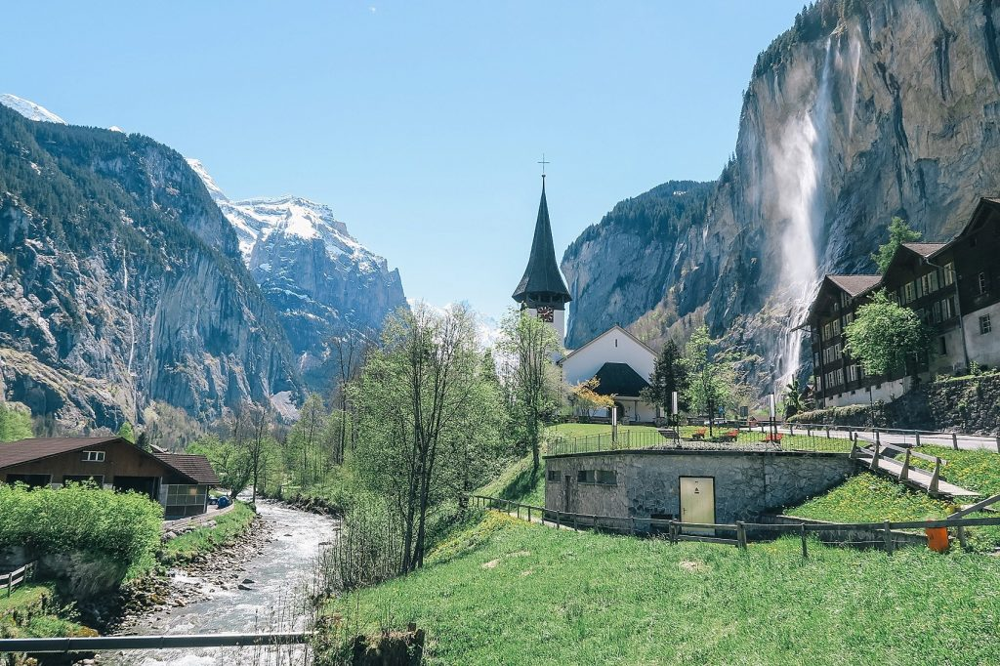
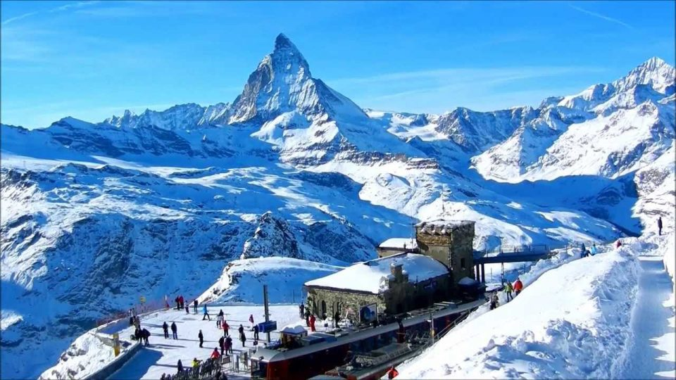
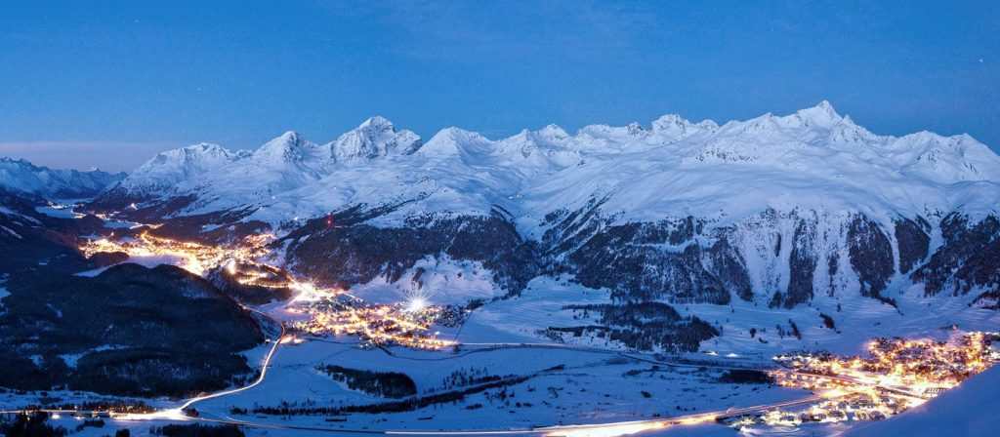

Recommendations for holidays in Switzerland in winter

×
Lauterbrunnen is a village located in a valley between hills. This small village is visited by many tourists on holidays. The reason is, in addition to a beautiful, clean village and a unique arrangement of houses, Lauterbrunnen is also a starting point for reaching various natural tourist sites. From Lauterbrunnen, you can reach Staubbach Falls and Trummelbach Falls in just a 20-30 minute walk. Even though you can't enjoy the waterfall in winter, you can still enjoy the snow-covered hills and see Lauterbrunnen's cute houses from above.

×
The small town of Zermatt is perfect for those of you who want to "hibernate" in winter. It means getting away from the routine and the crowd, then spending time quietly in a small town in the middle of the mountains. To get to Zermatt, you can take the train or bus. By late afternoon, the scenery in Zermatt is very beautiful. The yellow lights of the small wooden houses and inns signaled the start of night activity in Zermatt. Tourists will leave the inn and visit the cafes after a day of exploring Zermatt by riding the cable car around the city.

×
St. Moritz is the best destination for enjoying snow views at the foot of the Alps. In the morning you can enjoy the sunrise over the mountain peaks. The white color of snow, sky blue, and orange sun is a feast for the eyes. In this small town, there are many inns and hotels with beautiful views. In addition, St. Moritz also provides many shops that sell various kinds of souvenirs. In the evenings, especially in winter, the bars and cafes of St. Petersburg Moritz is full of tourists visiting to do snowboarding, skiing and trekking.